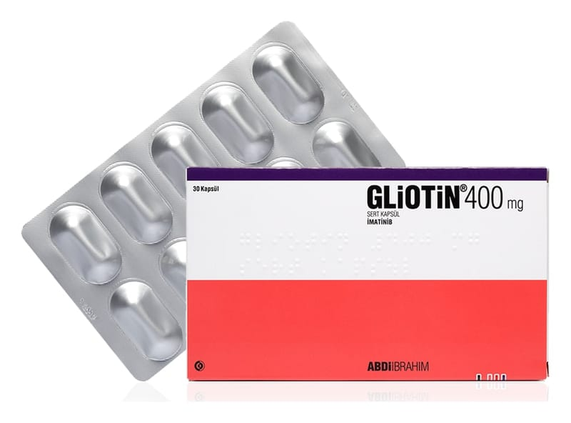

Gliotin 400 mg Sert Kapsül , 30 Adet

Ne için kullanılır
KT · Bölüm 1GLİOTİN’in etkin maddesi imatinib mesilattır. İmatinib mesilat protein kinaz inhibitörleri denilen bir ilaç sınıfına aittir. GLİOTİN, 30 adet sert kapsül içeren ambalajlarda piyasaya sunulmaktadır. Her bir kapsül 400 mg imatinibe eşdeğer 478 mg imatinib mesilat içerir. GLİOTİN, beyaz gövde, beyaz kapak renkli sert jelatin kapsül içinde beyaz veya beyazımsı toz karışım şeklindedir. GLİOTİN, imatinib adı verilen etkin madde içeren bir ilaçtır. Bu ilaç, aşağıda listelenen hastalıklarda anormal hücrelerin büyümesini inhibe ederek etki gösterir. Bunlar arasında bazı kanser türleri yer alır. GLİOTİN, yetişkinler ve çocuklar için aşağıdakilere yönelik bir tedavidir: - Kronik miyeloid lösemi (KML): Lösemi, beyaz kan hücrelerinin kanseridir. Bu beyaz hücreler genellikle vücudun enfeksiyonla savaşmasına yardımcı olur. Kronik miyeloid lösemi, belirli anormal beyaz hücrelerin (Miyeloid hücreler olarak adlandırılır.) kontrol dışı büyümeye başladığı bir lösemi şeklidir. - Philadelphia Kromozomu pozitif akut lenfoblastik lösemi (Ph pozitif ALL): Lösemi, beyaz kan hücrelerinin kanseridir. Bu beyaz hücreler genellikle vücudun enfeksiyonla savaşmasına yardımcı olur. Akut lenfoblastik lösemi, bazı anormal beyaz hücrelerin (Lenfoblastlar olarak adlandırılır) kontrol dışı büyümeye başladığı bir lösemi şeklidir. GLİOTİN, bu hücrelerin büyümesini engeller. Bu ürün sığır kaynaklı jelatin içermektedir.
GLİOTİN, aynı zamanda yetişkinler için aşağıdakilere yönelik bir tedavidir:
- Miyelodisplastik/miyeloproliferatif hastalıklar (MDS/MPD): Bunlar, bazı kan hücrelerinin kontrolden çıkmaya başladığı bir grup kan hastalığıdır. GLİOTİN, bu hastalıkların belirli bir alt tipinde bu hücrelerin büyümesini engeller. - Hipereozinofilik sendrom (HES) ve/veya kronik eozinofilik lösemi (CEL): Bunlar, bazı kan hücrelerinin (eozinofiller olarak adlandırılır) kontrolden çıkmaya başladığı kan hastalıklarıdır. GLİOTİN, bu hastalıkların belirli bir alt tipinde bu hücrelerin büyümesini engeller. - Gastrointestinal stromal tümörler (GIST): GIST, mide ve barsak kanseridir. Bu organların destek dokularının kontrolsüz hücre büyümesinden kaynaklanır. - Dermatofibrosarkoma protuberans (DFSP): DFSP, bazı hücrelerin kontrolden çıkmaya
başladığı derinin altındaki doku kanseridir. GLİOTİN, bu hücrelerin büyümesini engeller. GLİOTİN’in nasıl etki gösterdiği veya bu ilacın size neden verildiği konusunda sorularınız varsa doktorunuza danışınız.